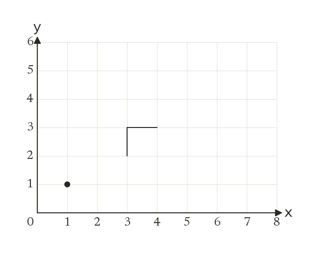
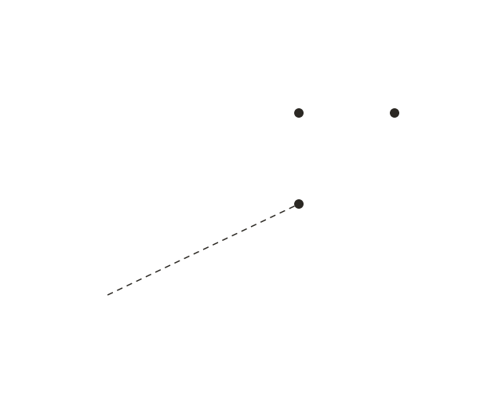
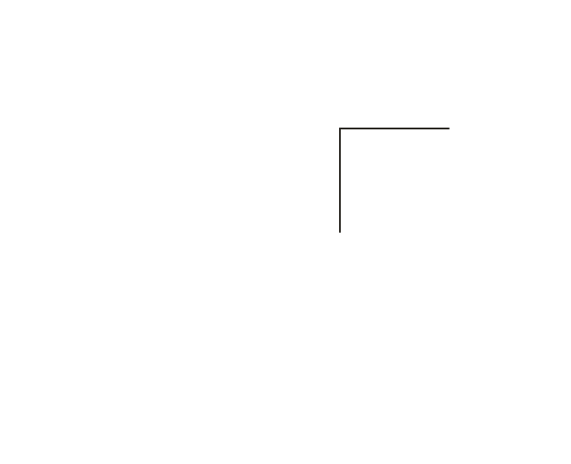
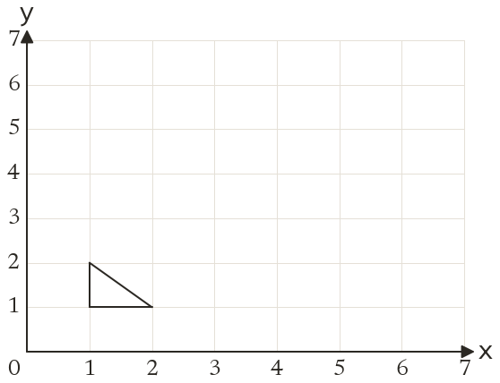
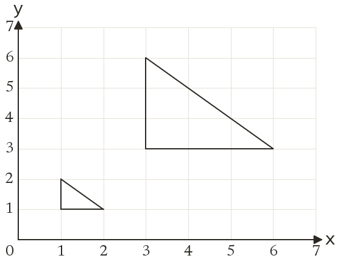
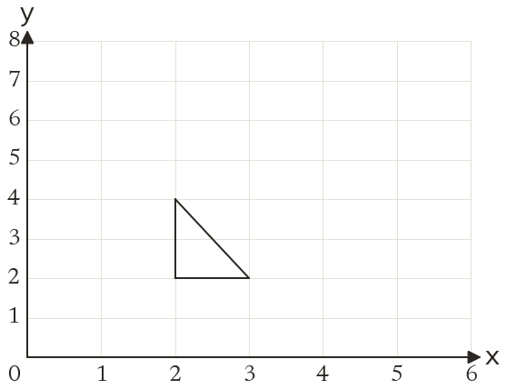
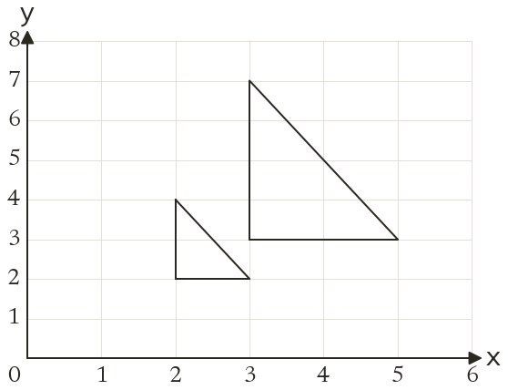
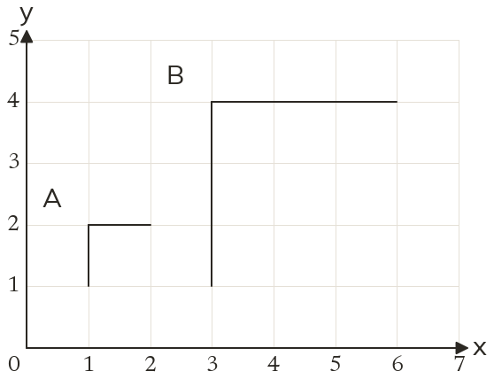

Every length times k
An enlargement multiplies every length by the scale factor k. The angles stay the same, so the image is similar to the object, not congruent.
A photo blown up into a poster keeps its shape but changes its size. An enlargement says exactly how much bigger, and from where.
Work down the page at your own pace. Write every answer in your book first, then click to check it.
Read each card, then follow the worked examples one step at a time.
An enlargement multiplies every length by the scale factor k. The angles stay the same, so the image is similar to the object, not congruent.

Each image point is on the line from the centre through its object point. It is k times as far from the centre.





Pick an answer. If it's wrong, the feedback tells you which mistake it was.
Printable worksheet — the questions with room to work.




Read each card, then follow the worked examples one step at a time.

The scale factor is an image length divided by its matching object length. Divide image by object; never subtract.

A line through each point and its image passes through the centre. Two such lines cross at the centre, and a third checks it.



Pick an answer. If it's wrong, the feedback tells you which mistake it was.
Finished? Next lesson: 10.14.5 Enlarging by a Fractional Scale Factor.
Log in, then search for a code to practise that skill.